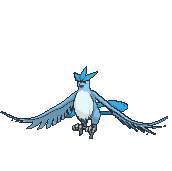
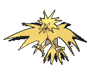
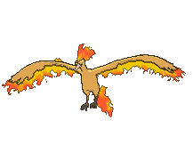

Os 3 Pássaros Lendários de Kanto (Articuno, Zapdos e Moltres) possuem poderes climáticos colossais! Para que não entrem em conflito elemental dentro do santuário 3x3, eles devem ser posicionados na clássica formação diagonal de segurança.


